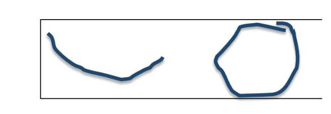

In/Out List Winter 2017
IN
Wholesome excess 
Giving people a chance, but disliking them if you do///trusting first impressions but
recognizing bias
Looking out for people/generosity/small acts of socialism (think making dinner for
a friend rather than hosting a large potluck)
Knowing when to stop but not stopping
Being honest about where you come from
Appreciating parents but being ok criticizing
Documentation (goes with personalized use of social
media)
Openly reckless romantic behavior*
Relaxed monogamy
Tension
PDA
Non personal minimalism
Terrifying truths
Gossiping but truthfully (NO pettiness, just keeping updated!)
Transparency
Using your full vocabulary (not performatively or pretentiously—rather find the right
word for most effective communication)
Reading for pleasure
Musical niches
Minimal but striking eye makeup, skin left as is/emphasized irregularity
Asymmetric jewelry and makeup
Square toed shoes
PANTS-extremes only in regards to width: either full wide-leg or cropped, tapered
look; wide will go out before taper of course and NO covering the ankles
Classic cardigans
Ankles
Feet
Anuses
Foreheads
Being gross but not making a thing of it
Liking getting choked/rough sex etc but not making a thing
of it**
Sweet potatoes, root vegetables (beets on way out, however)
Soup
Orange juice
Rum and tequila (CLEAR rum and tequila, to be clear)
Culturally/nationally specific alcohols
Winking instead of verbalizing (thank you, for instance)
Personal forms of communication/personalized forms3
Ringtones (what is more digitally wholesome?)
Murder
Non-personal minimalism
Earning money and spending it on the right things
*It must be clarified that this should NOT be frivolous or thoughtless recklessness. Of course, in line
with the rest of what’s IN it will be genuine and sincere, which then excuses the normally absurd or
ridiculous actions. This is a result of doing what you feel, regardless of what would be NORMAL.
**See footnote 4.